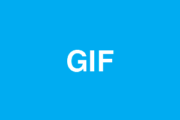
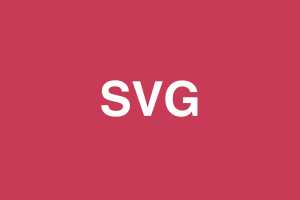
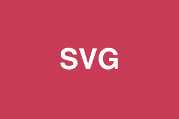
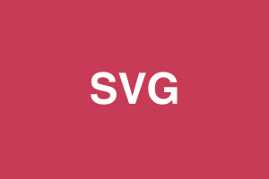

Welcome to basic gulp task template for reticulas-cssframework!
Gulp tasks
Run a server, browser sync, less, sourcemaps, html, js:
gulp watch
Generate dist folder:
gulp dist
Testing optimized images
 

Run a server, browser sync, less, sourcemaps, html, js:
gulp watch
Generate dist folder:
gulp dist
